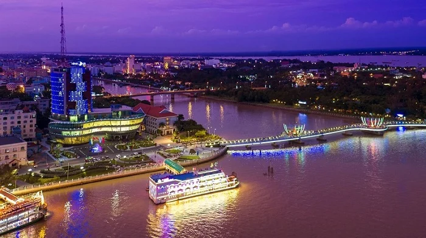
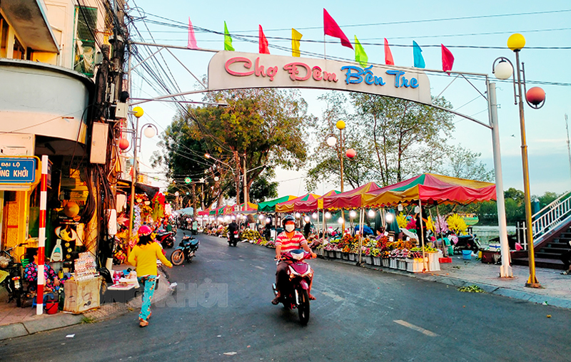

芹苴自由行景點：經典水上市場與繁華碼頭
芹苴（Cần Thơ）是湄公河三角洲最大的城市，想要感受最震撼的南越人文景觀，絕對不能錯過這裡。
1. 蔡浪水上市場（Chợ nổi Cái Răng）
清晨破曉時分，蔡浪水上市場便擠滿了販售熱帶水果與在地小吃的小舟。這是湄公河最具代表性的文化符號。

2. 寧僑碼頭（Bến Ninh Kiều）
入夜後的寧僑碼頭華燈初上，現代化的步行橋與波光粼粼的湄公河交織成迷人的都市夜景。

檳椥深度旅遊：走入椰子之鄉的道地夜生活
檳椥省（Bến Tre）以豐富的椰林景觀聞名。白天享受生態遊船後，傍晚非常推薦前來在地市集品嚐傳統點心。
檳椥夜市（Chợ Đêm Bến Tre）
在檳椥夜市，你可以用最親民的價格品嚐到現剖椰子、傳統越式法包，體驗不受觀光客打擾的純樸庶民日常。

隆安私房景點：探尋歷史與人文交織的紀念公園
作為胡志明市通往湄公河三角洲的門戶，隆安省（Long An）擁有深厚的歷史底蘊，值得旅人在啟程前駐足細細品味。
隆安抗戰英雄紀念碑（Tượng đài Long An）
宏偉的雕塑與寬闊的廣場面對著夕陽，訴說著這片土地過去的崢嶸歲月，是攝影愛好者捕捉黃昏大景的私房秘境。